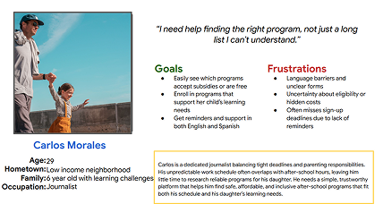
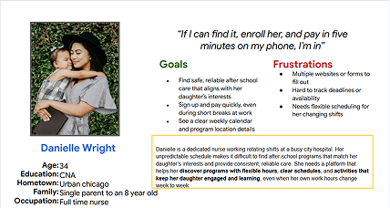
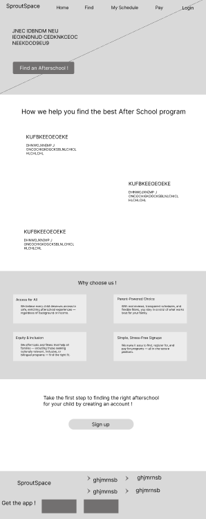
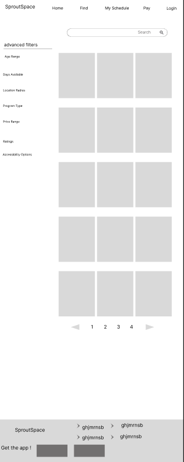
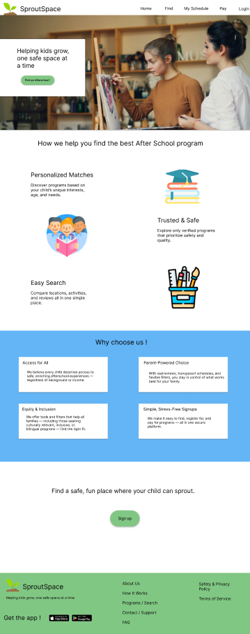
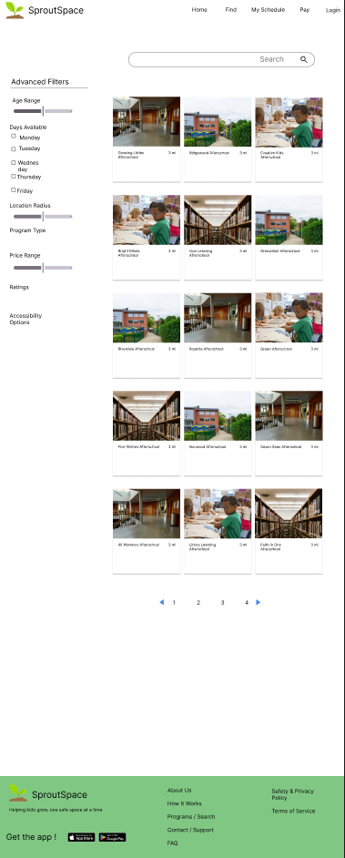
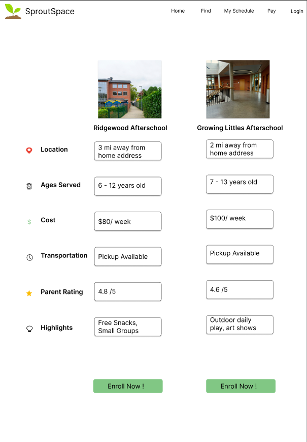

Every parent has been there — tabs open across three browsers, phone calls to programs that never call back, and still no clear answer on whether the soccer league is age-appropriate or even has spots left. SproutSpace was designed to end that search. A responsive web app that puts everything parents need to find the right after-school program in one place — clearly, safely, and quickly.
Before touching any design, I needed to understand what it actually felt like to search for an after-school program as a parent. Not in theory — in practice. What did they search for? Where did they get stuck? What made them give up and try somewhere else?
I interviewed three parents from different backgrounds and supplemented that with a look at existing platforms to find the gaps. What came back was consistent across all of them — this process is frustrating in the same ways, every time.
The search wasn't just inconvenient — it was eroding confidence. Parents weren't sure they were making the right choice, because they couldn't get enough information to know.
Research interviews are only as useful as how often you return to them. I built two personas to keep real parents at the center of every decision — so that when I was choosing between layouts or debating a filter pattern, I was asking the right question: does this work for them?


Three themes kept surfacing in the research. Rather than treat them as features to build, I framed them as promises the platform needed to keep — every visit, every search, every click.
No parent should have to page through irrelevant results. Filtering by age, category, and location needed to feel effortless — not like filling out a form.
Verified reviews and transparent program details give parents what they need to say yes with confidence — not just cross their fingers.
A recommendation that actually fits a child's interests and schedule isn't a bonus — it's the whole point.
I mapped user flows before sketching a single screen. The goal was to trace the exact journey — from a parent landing on the site for the first time to walking away with a program enrolled. Every branch in the flow was a question: is this step necessary? Does it get them closer to what they need, or does it slow them down?
Early concepts were intentionally rough. Low-fidelity wireframes kept the focus on structure over style — how to present information, where to put filters, how to make comparisons feel natural. Getting the bones right before adding any polish.


Usability testing surfaced something I hadn't anticipated: parents didn't just want to find programs — they wanted to weigh them against each other before committing. That insight led directly to one of the most meaningful additions to the design: a side-by-side comparison feature that let users evaluate two programs at once, on their own terms.
After several rounds of iteration, the designs came together into something that felt clean, trustworthy, and genuinely easy to use. The aesthetic was intentional — warm but structured, approachable but not careless. The kind of site a parent opens and immediately feels like they're in the right place.



SproutSpace pushed me to design for decisions, not just tasks. Parents weren't just trying to complete a search — they were trying to make a choice they felt good about. That distinction shaped everything from the information hierarchy to the comparison feature to the tone of the copy.
If I continued this project, I'd invest more time in usability testing across different parent demographics, and explore deeper personalization — recommendations that learn from a child's history and surface programs before a parent even knows to look for them.